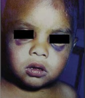
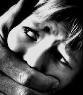
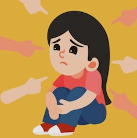

Solemos creer que un golpe educa,pero en realidad genera miedo y rompe la confianza de los niños.Cuando alguien externo interviene para detener un maltrato,a menudo se le critica por entrometerse;sin embargo debemos entender que la seguridad infantil es responsabilidad de toda la comunidad.Despues de todo ellos son el futuro de nuestra sociedad.Ademas aunque pensemos que un golpecito no es grave porque no deja huellas fisicas,el daño emocional es profundo.Ese dolor invisible marca la vida adulta,crando personas con dificultades para vivir plenamente.
Ningun niño deberia sacrificar su felicidad ni su estabilidad futura por vivir en un entorno de violencia.
Es fundamental desaprender estas creencias que se han transmitido por genreaciones,pues la educacion basada en el respeto es la unica vida real.Debemos fomentar canales de comunicacion donde los niños se sientan seguros de expresar
sus miedos sin temor a represalias violentas.Cada adulto tiene el compromiso etico de observar y actuar cuando detecte comportamientos que vulneren la integirdad fisica o pscologica de un menor.La sensibilizacion social es el primer para transformar la cultura
de la crianza hacia metodos no violentos.Solo mediante el acompañamiento amoroso y limites claros,basados en la empatoa,podremos romper el ciclo del maltrato infantil.

Lo que sucede en la infancia no se queda ahi; genera un efecto domino que transforma la vision del mundo.
Un niño que crece bajo violencia aprende a ver su entorno como un lugar hostil,donde desconfia de los demas por miedo a ser lastimado.Este impacto refleja directamente en su salud mental:la violencia destruye la autoestima y abre paso a la ansiedad.Esto crea una barrera invisible en sus relaciones personales;cuando una persona que fue violentada intenta abrirse a los demas,la desconfianza le impide conectar de forma sana.Lamentablemente,es comun que esta cadena se perpetue,donde la persona,sin quererlo,termine repitiendo insconsientemente los mismos ciclos de violencia que sufrio,atrapada en un patron dificil de romper.
Este trauma puede manifestarse en la edad adulta como dificultades para gestionar las emociones,problemas de salud fisica derivados del estres cronico o incluso el desarrollo de transtornos mas complejos.
No obstante,con apoyo terapeutico adecuado y redes de contencion emocional,es posible sanar las heridas del pasado y reconstruir una identidad propia.Es crucial entender que estas personas no estan definidas por lo que les ocurrio,sino por su capacidad de resiliencia ante la adversidad.La sociedad
debe ofrecer espacios de acompañamiento que faciliten la superacion de estos traumas,permitiendo que la victima recupere su valor.Romper con el ciclo del maltrato requiere de una voluntad consciente.

La creacion de un entorno seguro para el desarrollo infantil exige la corresponsabilidad de todos,en sus espacios inmediatos:hogar,escuela y areas recreativas.En la familia es indispensable establecer reglas claras equilibradas con amor y empatia.En la escuela debe existir un respeto mutuo y una autoridad justa,sin exceder limites.Asimismo,en los parques,la supervision adulta es clave al interactuar con otros.Esta proteccion se extiende tambien a figuras externas,como familiares lejanos o entrenadores,quienes deben comprometerse con el bienestar del menor.La vigilancia colectiva y una actitud alerta ante cuialquier señal de riesgo son nuestra mejor herramienta para intervenir a tiempo,evitando que los niños sufran violencia y protegiendo su integridad frente a secuelas que puedan marcar su vida permanentemente.
La construccion de esta red no implica invadir la privacidad del niño,sino generar un ambiente de confianza donde ellos sepan que tienen aliados incondicionales.Es vital realizar talleres de capacitacion para padres y educadores,enseñandoles a identificar situaciones de riesgo y como responder de forma efectiva.
Ademas,las politicas publicas deben fortalecer las instituciones que garantizan la proteccion infantil,destinando recursos para que las familias vulnerables reciban orientacion necesaria.La tecnologia tambien juega un rol relevante,
permitiendo crear comunidades digitales de apoyo y acceso a informacion preventiva.Al final del dia,una sociedad que prioriza la seguridad de sus niños apuesta por su desarrolo.